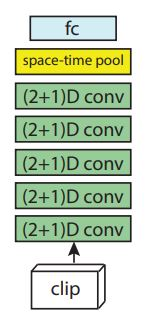

In this architecture, 3D convolution is broken down into 2D and 1D convolution. 2D convolution is in
spatial dimension and 1D convolution is along the temporal
dimension.
There are two benefits of this decomposition:
- Increase in non-linearity as the number of layers have
increased
- Due to factorization of 3D kernels, the
optimization becomes easier.
More details can be found
here.

Residual Network Architecture. R(2+1)D are ResNets with (2+1)D convolutions. For interpretability, residual connections are omitted.